NetScaler SDX 10.5
Navigation
- SDX IP Configuration
- Service VM Firmware – Upgrade
- XenServer – Upgrade
- XenServer Supplemental Pack
- XenServer Hotfixes
- Service VM Hostname
- Service VM Time Zone and NTP
- Licensing
- Service VM Alerting
- Service VM nsroot Password and AAA
- SSL Certificate and Encryption
- XenServer LACP Channels
- VPX Instances:
- Service VM Monitoring
- Service VM Backup
SDX IP Configuration
Default IP for Management Service VM is 192.168.100.1/16 bound to interface 0/1. Use laptop with crossover cable to reconfigure. Point browser to http://192.168.100.1. Default login is nsroot/nsroot.
Default IP for XenServer is 192.168.100.2/16. Default login is root/nsroot. Use the Management Service virtual machine to configure. XenServer and Management Service IPs must be on the same subnet.
- When you first login to the SDX Service virtual machine, the Setup Wizard appears. In the Network Configuration page, configure the IP addresses. Management Service IP Address and XenServer IP Address must be different but on the same subnet. Scroll down.
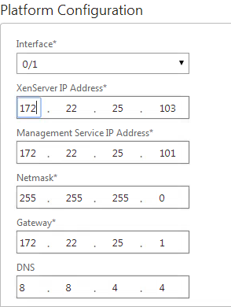
- In the System Settings page, select the time zone.
- Check the box next to Change Password, enter the new password. Click Continue.
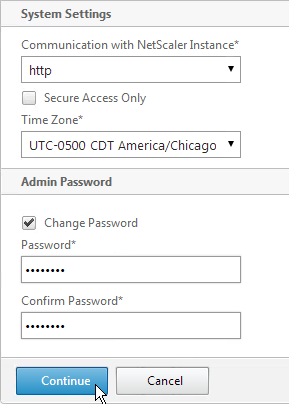
- In the Manage Licenses section, allocate licenses normally. Click Continue when done.
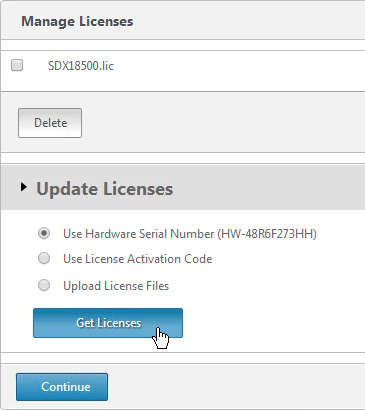
- Then click Done.
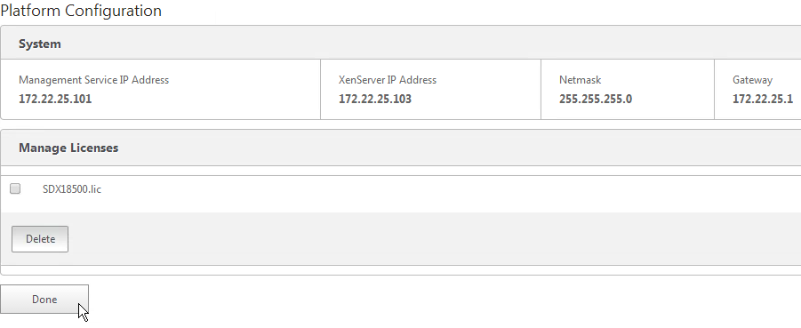
To modify the network configuration of the SDX appliance:
- Switch to the Configuration tab.
- In the navigation pane, click System.
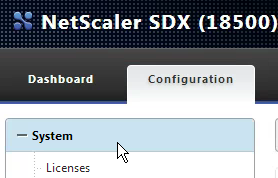
- In the System pane, under Setup Appliance, click Network Configuration.
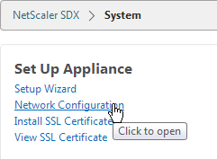
- In the Modify Network Configuration dialog box, specify values for the following parameters:
- Interface*—The interface through which clients connect to the Management Service. Possible values: 0/1, 0/2. Default: 0/1.
- XenServer IP Address*—The IP address of the XenServer.
- Management Service IP Address*—The IP address of the Management Service.
- Netmask*—The netmask for the subnet in which the SDX appliance is located.
- Gateway*—The default gateway for the network.
- DNS Server—The IP address of the DNS server.
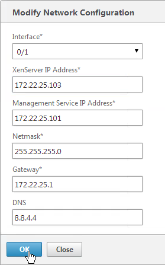
- Click OK.
Another way to login to the Management Service virtual machine is through the serial port. This is actually the XenServer Dom0 console. Once logged in to XenServer, run ssh 169.254.0.10 to access the Management Service virtual machine. Then follow instructions at http://support.citrix.com/article/CTX130496 to change the IP.
The console of the Management Service virtual machine can be reached by running the following command in the XenServer Dom0 shell (SSH or console):
xe vm-list params=name-label,dom-id name-label="Management Service VM“
Then run /usr/lib/xen/bin/xenconsole
Service VM Firmware – Upgrade
- If the webpage says NetScaler SDX on top then you are connected to the Service VM.
- Switch to the Configuration tab.
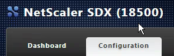
- In the navigation pane, expand Management Service, and then click Software Images.
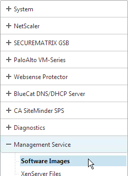
- In the right pane, click Upload.
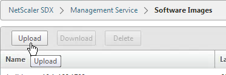
- In the Upload Management Service Software Image dialog box, click Browse, navigate to the folder that contains the build-svm file, and then double-click the build file.
- Click Upload.
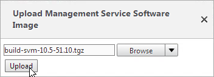
To upgrade the Management Service:
- In the navigation pane, click System.
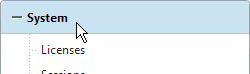
- In the System pane, under System Administration, click Upgrade Management Service.
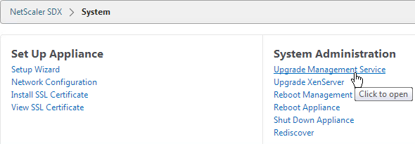
- In the Upgrade Management Service dialog box, in Build File, select the file of the build to which you want to upgrade the Management Service.
- If you see a Documentation File field, ignore it.
- Click OK.
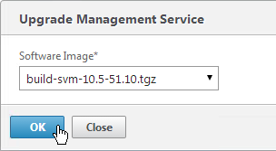
- Click Yes if asked to continue.
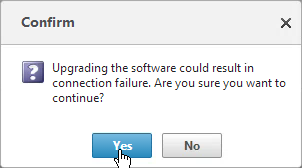
- If desired, go back to the Software Images node and delete older firmware files.
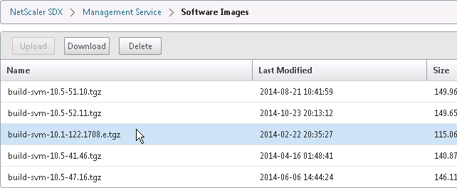
XenServer – Upgrade
SDX Service VM 10.1 or newer requires XenServer 6.1 to be installed on the SDX appliance. Make sure you use the XenServer 6.1 media that is specific to SDX. It should be named XenServer-6.1.0-install-sdx.iso. Installing XenServer will cause the physical appliance (and all VPX instances) to reboot.
- Switch to the Configuration tab.
- In the navigation pane, expand Management Service, and then click XenServer Files.
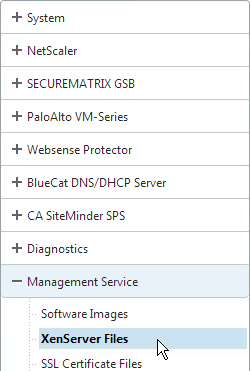
- In the right pane, in the ISO Images tab, click Upload.
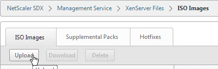
- In the Upload XenServer ISO Image File dialog box, click Browse, navigate to the folder that contains the build file, and then double-click the build file.
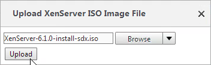
- Click Upload.
To upgrade the XenServer software:
- In the Configuration tab navigation pane, click System.
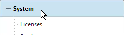
- In the details pane, click Upgrade XenServer.
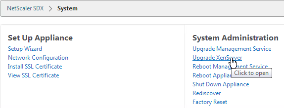
- In the Upgrade XenServer section, select the Image file from the list. Then click OK.
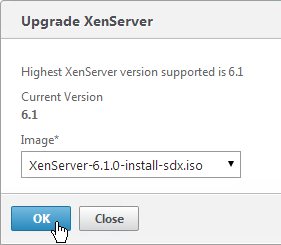
- Click Yes to confirm that a connection failure will occur.
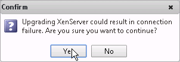
XenServer Supplemental Pack
A full reboot of the physical appliance will occur.
- Download the XenServer 6.1 Supplemental Pack from the same download page containing the SDX Service VM firmware. It’s in the Additional Components section.
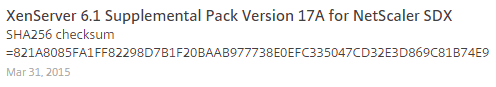
- On the Configuration page, on the left, expand Management Service and click XenServer Files.
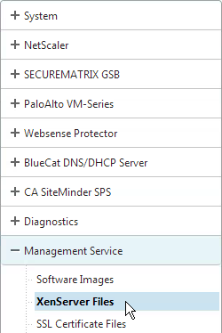
- On the right, switch to the Supplemental Packs tab and click Upload.
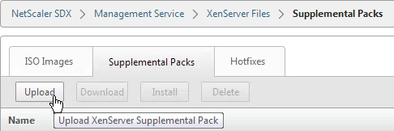
- Browse to the Supplemental Pack and click Upload.
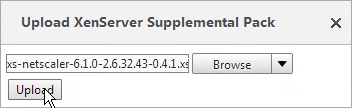
- Select the Supplemental Pack and click Install.
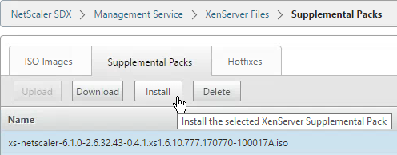
- Click Yes when prompted to reboot the appliance.
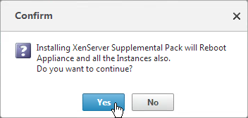
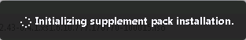
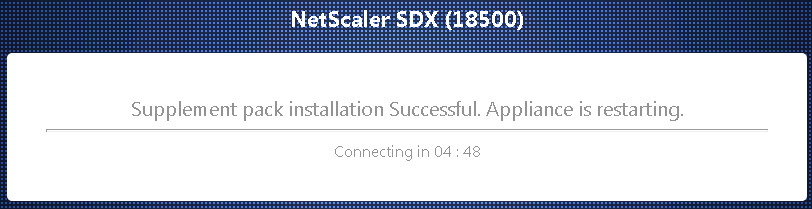
XenServer Hotfixes
A full reboot of the physical appliance will occur.
- On the left, expand Management Service and click XenServer Files.
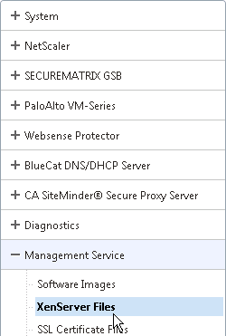
- On the right, switch to the Hotfixes tab and click Upload.
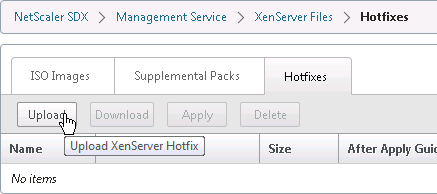
- Upload XenServer 6.1 Hotfix 44.
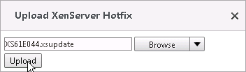
- Also upload XenServer 6.1 Hotfix 45.
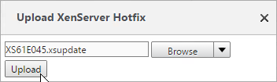
- Also upload XenServer 6.1 Hotfix 48.
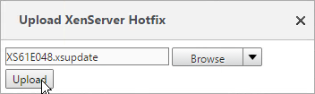
- Highlight one of the hotfixes and click Apply.
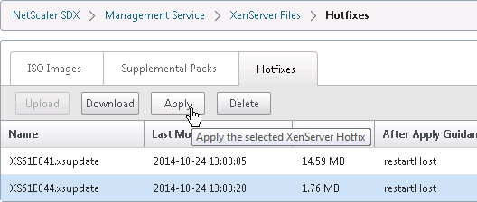
- Click Yes when asked to apply.
- Apply the next hotfix.
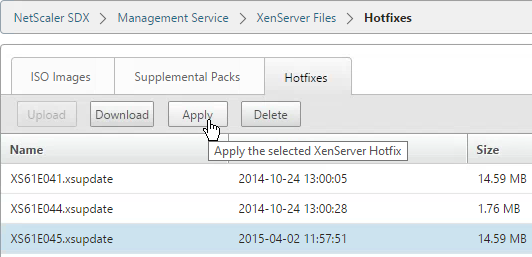
- Click Yes when asked to apply. Repeat for the remaining hotfixes.
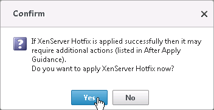
- On the left, click the System node.
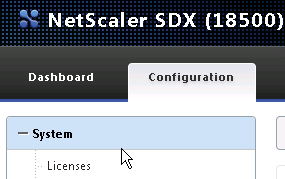
- On the right, in the right column, click Reboot Appliance.
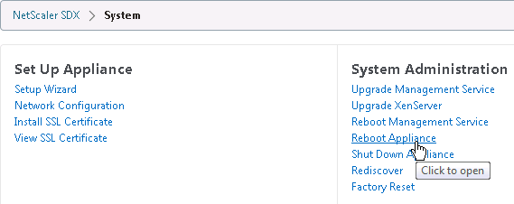
- Click Yes when asked to reboot.
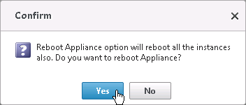
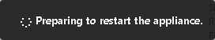
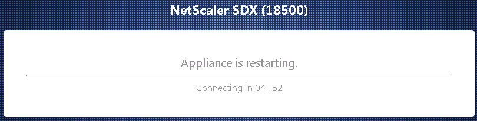
Service VM Hostname
- On the Configuration tab, click System.
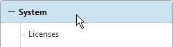
- In the right pane, click Change Hostname in the System Settings section.
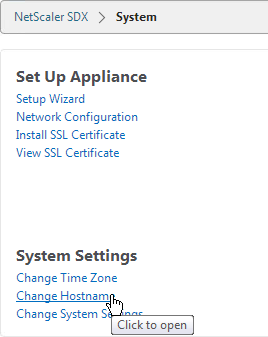
- Enter a new hostname and click OK.
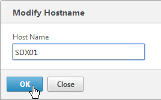
Service VM Time Zone and NTP
- Go to Configuration tab and click System on the left.
- On the right, under System Settings click Change Time Zone.
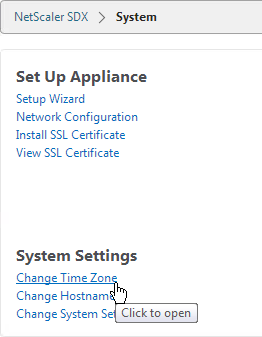
- Select the time zone. For Central time, look for UTC-0500 and Chicago.
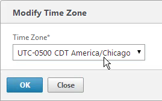
To configure an NTP server:
- On the Configuration tab, in the navigation pane, expand System, and then click NTP Servers.
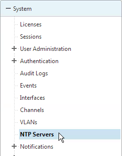
- To add a new NTP server, in the right pane, click Add.
- In the Create NTP Server dialog box, set the following parameters:
- Server Name/IP Address*—The domain name of the NTP server or the IP address of the NTP server. The name or IP address cannot be changed for an existing NTP server.
- Preferred—Synchronize with this server first. Applicable if more than one server is configured.
- Click Add.
- In the right pane click NTP Synchronization.
- In theNTP Synchronization dialog box, select Enable NTP Sync. Click OK.
Licensing
To upload a license file to the SDX appliance:
- Login to Citrix.com and go to Account.
- Click Allocate Licenses, find a NetScaler SDX license, and allocate it. There is no need to specify a hostname. You can use the same license file on multiple SDX appliances.
- On the Configuration tab, in the navigation pane, expand System, and then click Licenses.
- In the right pane, click Manage Licenses.
- In the Manage Licenses page, select Upload License Files and click Upload.
- In the Upload License File dialog box, do the following:
- Click Browse.
- Navigate to the folder that contains the license file you want to upload, and then double-click the license file.
- Click Upload.
- In the License Files pane, click Apply Licenses.
- In the Confirm message box, click Yes.
Service VM Alerting
Syslog:
- On the Configuration tab, expand System > Notifications and click Syslog Servers.
- In the right pane click the Add button.
- Enter a name for the server.
- Enter the IP address of the Syslog server.
- Select log levels and click Add.
Mail Notification
- On the Configuration tab, expand System > Notifications and click Email.
- In the right pane, on the SMTP Server tab, click Add.
- Enter the DNS name of the mail server and click Create.
- In the right pane, switch to the Email Distribution List tab and click Add.
- Enter a name for the mail profile.
- Enter the destination email address and click Create.
- The instances will send SNMP traps to the Service VM. To get alerted for these traps, in the Configuration page, in the navigation pane, expand NetScaler, expand Events, and click Event Rules.
- On the right, click Add.
- Give the rule a name.
- Select the Major and Critical severities and move them to the right. Scroll down.
- For the other sections, if you don’t configure anything then you will receive alerts for all of the devices, categories, and failure objects. If you configure any of them then only the configured entities will be alerted. Scroll down.
- Click Save.
- Select an Email Distribution List and click Done.
Service VM nsroot Password and AAA
To change the password of the default user account:
- On the Configuration tab, in the navigation pane, expand System, and then click Users.
- In the Users pane, click the default user account, and then click Edit.
- In the Configure System User dialog box, in Password and Confirm Password, enter the password of your choice. Click OK.
To create a user account:
- In the navigation pane, expand System, and then click Users. The Users pane displays a list of existing user accounts, with their permissions.
- To create a user account, click Add.
- In the Create System User or Modify System User dialog box, set the following parameters:
- Name*—The user name of the account. The following characters are allowed in the name: letters a through z and A through Z, numbers 0 through 9, period (.), space, and underscore (_). Maximum length: 128. You cannot change the name.
- Password*—The password for logging on to the appliance.
- Confirm Password*—The password.
- Session Timeout
- Groups —The user's privileges on the appliance. Possible values:
- owner—The user can perform all administration tasks related to the Management Service.
- readonly—The user can only monitor the system and change the password of the account.
- Click Create. The user that you created is listed in the Users pane.
AAA Authentication:
- If you would like to enable LDAP authentication for the Service VM, do that under Configuration > System > Authentication > LDAP.
- In the right pane, click Add.
- Enter the LDAP settings. Change the port to 636 if using Secure LDAP (recommended). Enter the bind account. Scroll down.
- Change the Security Type to SSL. Check the box next to Enable Change Password. Click Create.
- Expand System, expand User Administration and click Groups.
- Click Add.
- Enter the case sensitive name of the Active Directory group.
- Select the admin permission.
- Configure the Session Timeout. Click Create.
SSL Certificate and Encryption
Replace SDX Service VM Certificate:
Before enabling secure access to the Service VM web console, you probably want to replace the Service VM certificate.
- PEM format: The certificate must be in PEM format. The Service VM does not provide any mechanism for converting a PFX file to PEM. You can convert from PFX to PEM by using the Import PKCS#12 task in a NetScaler instance.
- On the Configuration tab, expand Management Service and click SSL Certificate Files.
- On the right, click Upload.
- Browse to the certificate PEM file and click Upload.
- On the right, switch to the SSL Keys tab and click Upload.
- Browse to the PEM key file. This could be the same file containing the certificate or a separate file. Click Upload.
- On the left, click System.
- On the right, click Install SSL Certificate.
- Select the uploaded certificate and key files. If the key file is encrypted, enter the password. Then click OK. The Service VM will restart so there will be an interruption.
- After the Service VM restarts, connect to it using HTTPS. You can’t make this change if you are connected using HTTP.
- On the Configuration tab, click System.
- On the right, click Change System Settings.
- Check the box next to Secure Access Only and click OK. This forces you to use HTTPS to connect to the Service VM.
SSL Encrypt Management Service to NetScaler Communication:
From http://support.citrix.com/article/CTX134973: Communication from the Service Virtual Machine to the NetScaler VPX instances is HTTP by default. If you want to configure HTTPS access for the NetScaler VPX instances, then you have to secure the network traffic between the Service Virtual Machine and NetScaler VPX instances. If you do not secure the network traffic from the Service Virtual Machine configuration, then the NetScaler VPX Instance State appears as Out of Service and the Status shows Inventory from instance failed.
- Log on to the Service Virtual Machine Graphical User Interface (GUI) management.
- On the Configuration tab, click System.
- On the right, click Change System Settings.
- Change Communication with NetScaler Instance to https, as shown in the following screen shot:
- Run the following command on the NetScaler VPX instance, to change the Management Access (-gui) to SECUREONLY:
set ns ip _ipaddress_ -netmask _netmask_ -arp ENABLED -icmp ENABLED -vServer DISABLED -telnet ENABLED -ftp ENABLED -gui SECUREONLY -ssh ENABLED -snmp ENABLED - mgmtAccess ENABLED -restrictAccess DISABLED -dynamicRouting ENABLED -ospf DISABLED -bgp DISABLED -rip DISABLED -hostRoute DISABLED -vrID 0
Or in the NetScaler instance management GUI go to Network > IPs, open the NSIP and then check the box next to Secure access only.
XenServer LACP Channels
To use LACP, configure Channels in the Service VM, which creates them in XenServer. Then when provisioning an instance, connect it to the Channel. If you are instead using static port channels, you can configure them inside a VPX instance.
- In the Service VM, on the Configuration tab, expand System and click Channels.
- On the right, click Add.
- Select a Channel ID.
- For Type, select LACP or STATIC. The other two options are for switch independent load balancing.
- In the Interfaces tab, click Add.
- Move the Channel Member interfaces to the right by clicking the plus icon.
- On the Settings tab, you can select Long or Short, depending on switch configuration. Long is the default.
- Click Create when done.
- Click Yes when asked to proceed.
- The channel will then be created on XenServer.
VPX Instances – Provision
To create an admin profile:
Admin profiles specify the user credentials that are used by the Management Service when provisioning the NetScaler instances, and later when communicating with the instances to retrieve configuration data. The user credentials specified in an admin profile are also used by the client when logging on to the NetScaler instances through the CLI or the configuration utility.
The default admin profile for an instance specifies a user name of nsroot, and the password is also nsroot. This profile cannot be modified or deleted. However, you should override the default profile by creating a user-defined admin profile and attaching it to the instance when you provision the instance. The Management Service administrator can delete a user-defined admin profile if it is not attached to any NetScaler instance.
Important: Do not change the password directly on the NetScaler VPX instance. If you do so, the instance becomes unreachable from the Management Service. To change a password, first create a new admin profile, and then modify the NetScaler instance, selecting this profile from the Admin Profile list.
- On the Configuration tab, in the navigation pane, expand NetScaler Configuration, and then click Admin Profiles.
- In the Admin Profiles pane, click Add.
- In the Create Admin Profile dialog box, set the following parameters:
- Profile Name*—Name of the admin profile. The default profile name is nsroot. You can create user-defined profile names.
- User Name—User name used to log on to the NetScaler instances. The user name of the default profile is nsroot and cannot be changed.
- Password*—The password used to log on to the NetScaler instance. Maximum length: 31 characters.
- Confirm Password*—The password used to log on to the NetScaler instance.
- Click Create. The admin profile you created appears in the Admin Profiles pane.
To upload a NetScaler VPX .xva file:
You must upload a NetScaler VPX .xva file to the SDX appliance before provisioning the NetScaler VPX instances.
- On the Configuration tab, in the navigation pane, expand NetScaler Configuration, and then click Software Images.
- On the right, switch to the XVA Files tab and then click Upload.
- In the Upload NetScaler Instance XVA dialog box, click Browse and select the XVA image file that you want to upload. Click Upload. The XVA image file appears in the NetScaler XVA Files pane after it is uploaded.
To provision a NetScaler instance:
- On the Configuration tab, in the navigation pane, expand NetScaler Configuration, and then click Instances.
- In the NetScaler Instances pane, click Add.
- In the Provision NetScaler Wizard follow the instructions in the wizard.
- Click Create. The NetScaler instance you provisioned appears in the NetScaler Instances pane.
The wizard will ask for the following info:
- Name* - The host name assigned to the NetScaler instance.
- IP Address* - The NetScaler IP (NSIP) address at which you access a NetScaler instance for management purposes. A NetScaler instance can have only one NSIP. You cannot remove an NSIP address.
- Netmask* - The subnet mask associated with the NSIP address.
- Gateway* - The default gateway that you must add on the NetScaler instance if you want access through SSH or the configuration utility from an administrative workstation or laptop that is on a different network.
- XVA File* - The .xva image file that you need to provision. This file is required only when you add a NetScaler instance.
- Feature License* - Specifies the license you have procured for the NetScaler. The license could be Standard, Enterprise, and Platinum.
- Admin Profile* - The profile you want to attach to the NetScaler instance. This profile specifies the user credentials that are used by the Management Service to provision the NetScaler instance and later, to communicate with the instance to retrieve configuration data. The user credentials used in this profile are also used while logging on to the NetScaler instance by using the GUI or the CLI. It is recommended that you change the default password of the admin profile. This is done by creating a new profile with a user-defined password. For more information, see Configuring Admin Profiles.
- Total Memory (MB)* - The total memory allocated to the NetScaler instance.
- #SSL Cores* - Number of SSL cores assigned to the NetScaler instance. SSL cores cannot be shared. The instance is restarted if you modify this value.
- Throughput (Mbps)* - The total throughput allocated to the NetScaler instance. The total used throughput should be less than or equal to the maximum throughput allocated in the SDX license. If the administrator has already allocated full throughput to multiple instances, no further throughput can be assigned to any new instance.
- Packets per second* - The total number of packets received on the interface every second.
- CPU - Assign a dedicated core or cores to the instance or the instance shares a core with other instance(s).
- User Name* - The root user name for the NetScaler instance administrator. This user has superuser access, but does not have access to networking commands to configure VLANs and interfaces. (List of non-accessible commands will be listed here in later versions of this document)
- Password* - The password for the root user.
- Shell/Sftp/Scp Access* - The access allowed to the NetScaler instance administrator.
- Interface Settings - This specifies the network interfaces assigned to a NetScaler instance. You can assign interfaces to an instance. For each interface, if you select Tagged, specify a VLAN ID.
- Important:The interface ID numbers of interfaces that you add to an instance do not necessarily correspond to the physical interface numbering on the SDX appliance. For example, if the first interface that you associate with instance 1 is SDX interface 1/4, it appears as interface 1/1 when you log on to the instance and view the interface settings, because it is the first interface that you associated with instance 1.
- If a non-zero VLAN ID is specified for a NetScaler instance interface, all the packets transmitted from the NetScaler instance through that interface will be tagged with the specified VLAN ID. If you want incoming packets meant for the NetScaler instance that you are configuring to be forwarded to the instance through a particular interface, you must tag that interface with the VLAN ID you want and ensure that the incoming packets specify the same VLAN ID.
- For an interface to receive packets with several VLAN tags, you must specify a VLAN ID of 0 for the interface, and you must specify the required VLAN IDs for the NetScaler instance interface.
- NSVLAN ID - An integer that uniquely identifies the NSVLAN. Minimum value: 2. Maximum value: 4095.
- Tagged - Designate all interfaces associated with the NSVLAN as 802.1q tagged interfaces.
- Interfaces - Bind the selected interfaces to the NSVLAN.
Here are screenshots from the wizard:
- On the Provision NetScaler page, enter a name for the instance.
- Enter the NSIP, mask, and Gateway.
- Select the XVA File with your desired firmware build.
- Change the Feature License to Platinum.
- Select an Admin Profile created earlier.
- Enter a Description. Scroll down.
- In the Resource Allocation section, change the Total Memory to
- For SSL Chips, specify between 1 and 16.
- For Throughput, partition your licensed bandwidth. If you are licensed for 8 Gbps, make sure the total of all VPX instances does not exceed that number.
- For CPU, select one of the Dedicated options. Then scroll down.
- In the Instance Administration section, enter a new local account that will be created on the VPX. This is in addition to the nsroot user. Note, not all functionality is available to this account. Scroll down.
- In the Network Settings section, leave 0/1 selected and deselect 0/2.
- Click Add to connect the VPX to more interfaces.
- If you have Port Channels, select one of the LA interfaces.
- Try not configure any VLAN settings here. If you do, XenServer filters the VLANs available to the VPX instance. Changing the VLAN filtering settings later probably requires a reboot. Click Add.
- In the Management VLAN Settings section, do not configure anything in this section unless you need to tag the NSIP VLAN. Click Done.
- After a couple minutes the instance will be created. Click Close.
- In your Instances list, click the IP address to launch the VPX management console. Do the following at a minimum (instructions in the NetScaler System Configuration section):
- Create Policy Based Route for the NSIP – System > Settings > Network > PBRs
- Add SNIPs for each VLAN – System > Network > IPs
- Add VLANs and bind to SNIPs – System > Network > VLANs
- Create Static Routes for internal networks - System > Network > Routes
- Change default gateway – System > Network > Routes > 0.0.0.0
- Create another instance on a different SDX and High Availability pair them together – System > High Availability
Applying the Administration Configuration
At the time of provisioning a NetScaler VPX instance, the Management Service creates some policies, instance administration (admin) profile, and other configuration on the VPX instance. If the Management Service fails to apply the admin configuration at this time due to any reason (for example, the Management Service and the NetScaler VPX instance are on different subnetworks and the router is down or if the Management Service and NetScaler VPX instance are on the same subnet but traffic has to pass through an external switch and one of the required links is down), you can explicitly push the admin configuration from the Management Service to the NetScaler VPX instance at any time.
- On the Configuration tab, in the navigation pane, click NetScaler.
- In the NetScaler Configuration pane, click Apply Admin Configuration.
- In the Apply Admin Configuration dialog box, in Instance IP Address, select the IP address of the NetScaler VPX instance on which you want to apply the admin configuration.
- Click OK.
VPX Instances – Manage
You may login to the VPX instance and configure everything normally. SDX also offers the ability to manage IP address and SSL certificates from SDX rather than from inside the VPX instance. The SDX Management Service does not have the ability to create certificates so it’s probably best to do that from within the VPX instance.
To view the console of a NetScaler instance:
- Connect to the Service VM using https.
- Viewing the console might not work unless you replace the Service VM certificate.
- In the Service VM, go to Configuration > NetScaler > Instances.
- On the right, right-click an instance and click Console.
- The instance console then appears.

- Another option is to use the Lights Out Module and the xl console command as detailed at Citrix Blog Post SDX Remote Console Access of VIs.
To start, stop, delete, or restart a NetScaler instance:
- On the Configuration tab, in the navigation pane, expand NetScaler and click Instances.
- In the Instances pane, right-click the NetScaler instance on which you want to perform the operation, and then click Start or Shut Down or Delete or Reboot.
- In the Confirm message box, click Yes.
Creating a Subnet IP Address on a NetScaler Instance:
You can create or delete a SNIP during runtime without restarting the NetScaler instance.
- On the Configuration tab, in the navigation pane, click NetScaler.
- In the NetScaler Configuration pane, click Create IP.
- In the Create NetScaler IP dialog box, specify values for the following parameters.
- IP Address* - Specify the IP address assigned as the SNIP or the MIP address.
- Netmask* - Specify the subnet mask associated with the SNIP or MIP address.
- Type* - Specify the type of IP address. Possible values: SNIP.
- Save Configuration* - Specify whether the configuration should be saved on the NetScaler. Default value is false.
- Instance IP Address* - Specify the IP address of the NetScaler instance.
- Click Create.
To save the configuration on a NetScaler instance:
- On the Configuration tab, in the navigation pane, click NetScaler.
- In the NetScaler pane, click Save Configuration.
- In the Save Configuration dialog box, in Instance IP Address, select the IP addresses of the NetScaler instances whose configuration you want to save.
- Click OK.
Change NSIP of VPX Instance:
If you change NSIP inside of VPX instead of using the Modify Instance wizard in the Service VM, see article http://support.citrix.com/article/CTX139206 to adjust the XenServer settings.
Enable Call Home:
- On the Configuration tab, in the navigation pane, click the NetScaler node.
- On the right, click Call Home.
- Enter an email address to receive communications regarding NetScaler Call Home.
- Check the box next to Enable Call Home.
- Select the instances to enable Call Home and click OK.
VPX Instance – Firmware Upgrade
Upload NetScaler Firmware Build Files:
To upgrade a VPX instance from the Service VM, first upload the firmware build file.
- In the Configuration tab, on the left, expand NetScaler and click Software Images.
- On the right, in the Software Images tab click Upload.
- Browse to the build…tgz file and click Upload.
Upgrading Multiple NetScaler VPX Instances:
You can upgrade multiple instances at the same time.
- To prevent any loss of the configuration running on the instance that you want to upgrade, save the configuration on the instance before you upgrade the instance.
- On the Configuration tab, in the navigation pane, expand NetScaler and click Instances.
- Click an instance to highlight it. Open the Action menu and click Upgrade.
- In the Upgrade NetScaler dialog box, in Build File, select the NetScaler upgrade build file of the version you want to upgrade to. Ignore the Documentation File. Click OK.
Service VM Monitoring
- To view the audit log, in the navigation pane, expand System, and then click Audit Logs.
- To view the task log, in the navigation pane, expand Diagnostics, and then click Task Log.
- To view events, on the Dashboard tab, in the System Health Events section on the bottom right, click Show All Events.
Service VM Backups
The SDX appliance automatically keeps three backups of the Service VM configuration that are taken daily at 12:30 am. Only configuration files and logs are backed up. This task does not backup the VPXs. You can go to Management Service > Backup Files to backup or restore the appliance’s configuration. And you can download the backup files.